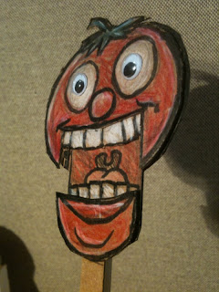

Sliding Mouth
7/30/2010
{kind=link}

From Ted Nunes:
This is a tomato puppet idea I did recently. It's something I drew, instead of a photo, but the principle is the same. For a photo you would probably want to spray mount it to some card stock (bristol board) to give you some rigidity.
The jaw is the tricky part. I cut it out and mounted it to a strip on which I drew the insides of the mouth. (you could grab this from another photo of somebody's open mouth, or just draw it with markers--it could look funny to have a "cartoony" mouth interior.) I made a track that the jaw would slide along using strips of cardboard glued to the back of the face. I cut out another piece of cardboard the same shape as the head that the face is glued to. The jaw slides between those pieces--the track acting as a spacer--plus that second piece gave me something to attach a stick to (a chopstick in this case.)
This photo is version #1, where the jaw is simply attached to another strip of cardboard that I used to move it up and down. I've modified it to use a lever and string and rubber-band for tension, but I don't have photos of that one yet.
I just used crafts store googley eyes on this, but my ukulele puppet is mostly the same principle and he has moving eyes. I'll try to get a shot of how that works.